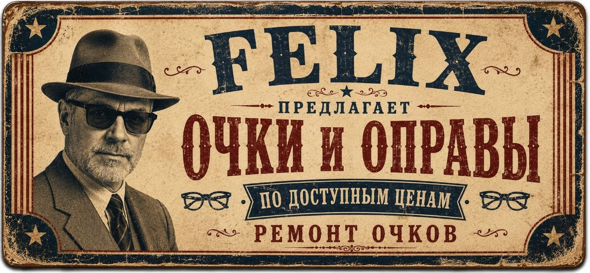
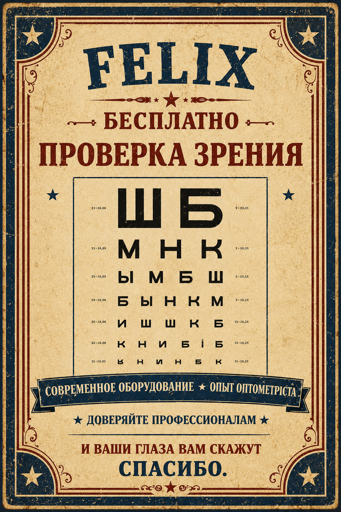

Очки, оправы и мастерский ремонт
Написать в WhatsApp
Очки, оправы и мастерский ремонт
Написать в WhatsAppОправы и линзы, подобранные с заботой
ПосмотретьСолнцезащитные очки
ПосмотретьКонтактные линзы
Заказать контактные линзы
Проверка зрения
Записаться на приём к врачуРемонт очков любой сложности
Сделайте фото поломки и отправьте нам